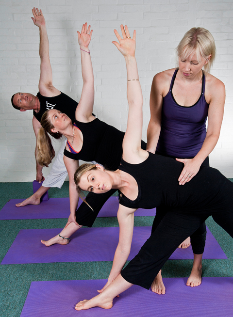
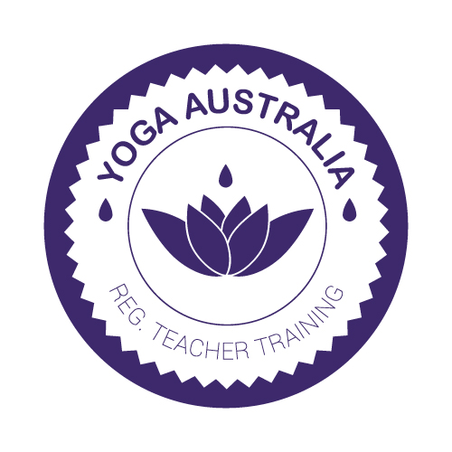

Online Live Streamed Yoga Classes
Online Pre Recorded Yoga Classes
Online Pre Recorded Meditation Course
Busselton Classes
Corporate
Retreats
Shop
Media

Yoga Teacher Training
KatieYoga 500hr Yoga Teacher Training
Course commences in February 2020.
This is a comprehensive qualification where you will learn how to become a yoga teacher and work with a diverse range of clients.
The qualification is delivered over 18 months at katieyoga in Fig Tree Lane Busselton. Face-to-face delivery is undertaken during school terms and includes monthly workshops on Sundays. Approximately 5 hours of home study is required each week. To consolidate training and maintain regular contact with your teachers you will be required to attend a weekly yoga class at katieyoga.

This course is registered with Yoga Australia, the Peak Body for yoga in Australia. Successful graduates are eligible to register as a Level 1 Yoga Teacher with Yoga Australia and go on to register as a Level 2 Yoga Teacher after 5 years of teaching.
Throughout your study you will also receive a free Student Membership to Yoga Australia. This membership will provide you with access to free support and resources.
Course Content
In this comprehensive course you will cover:
Asana (Physical Postures)
Learn the alignment, benefits, contraindications and variations of yoga postures.
Pranayama (Breathing Practices)
Learn different pranayama techniques, their benefits and their contraindications.
Dhyana (Meditation)
Yoga is management of the mind. Learn a variety of relaxation and meditation techniques that will help build concentration, mental focus and present moment awareness (mindfulness).
Mudra and Bandha
Learn about Mudras and Bandhas, their benefits and their contraindications.
Shatkarma
Yoga is a purification practice. Learn about these ancient yogic cleansing practices.
Anatomy and Physiology
A strong anatomical foundation is key to enhancing your understanding of yoga postures and developing creative yoga sequences that your clients enjoy. Learn about structural anatomy, functional physiology and the mind-body relationship.
Yoga Physiology
Explore the yogic physiology and the subtle systems. This unit covers Pancha Koshas, Nadis, Chakras, Pancha, Vayus and Gunas.
History
There are many paths of Yoga that all lead to the same goal, they are often compared to rivers which flow into the sea. At first they are completely separate, as the rivers progress they begin to merge with each other, until eventually they are totally absorbed into the one vast ocean. Learn about the ancient origins of yoga in India and the modern history of yoga in the West.
Philosophy
Learn about ancient yogic texts such as the Bhagavad Gita, the Upanishads and the Hatha Yoga Pradipika.
Yoga Sutras
Written in Sanskrit by Patanjali, these sutras provide us with a framework to guide us on our yogic path. Discover how this ancient text written about 2000 years ago still applies to today’s age.
Ayurveda and Yogic Lifestyle
The sister science of yoga, Ayurveda is about bringing our body into balance. Learn about your Dosha, and how you can tailor your lifestyle and yoga practice to find greater balance.
Special Needs
This comprehensive unit will empower you with the skills and knowledge to work with injuries, aliments, health conditions and different client groups. It covers Pregnancy, Post Natal, Kids, Seniors, Orthopaedic Issues, Medical Issues and Neurology Issues.
Research
The amount of evidence-based scientific research undertaken on yoga is dramatically increasing each year. Learn about the growing research base in the field of yoga. This unit covers what research is out there, how to access it and how to translate it into your teaching.
Business of Yoga
You’ve done your Yoga Teacher Training now what? This comprehensive unit will empower you with the skills and knowledge to get started as a small business owner.
Yoga as a Profession
You will learn about yoga as a profession including the Scope of Practice, Code of Conduct, Continuing Professional Development, Ethics and about the role of Yoga Australia as the peak body in the Yoga Profession in Australia.
Teaching Methodology
Explore communication and interpersonal skills, and how to translate these to a classroom environment. Discover different learning styles and what this means for creating engaging classes. Learn how to apply principles of good teaching.
Teaching Yoga
Learn how to plan and deliver engaging yoga classes, and receive and act on student feedback. You will have the opportunity to practice teaching numerous times and teach two Community Classes.
Sequencing Yoga
Learn how to creatively and safely sequence Hatha, Vinyasa and Restorative Yoga Classes that your clients will love.
Teaching Eastern Concepts in a Class Environment
Translate esoteric yogic teaching into bit size chunks that will enhance your classes and your clients experience.
Senior First Aid
A requirement of your training and Yoga Australia Registration, is to complete a Senior First Aid by a Registered Training Provider.
For More Information and How to Register
Course Prospectuses are available on request. Class numbers are limited and acceptance into the course is through an Application Process. Please contact us to request a Course Prospectus and an Application Form.
About Your Teachers
Katie and David are both qualified trainers with a wealth of experience. They have taught numerous people (including teachers, workplace trainers, health practitioners, miners and Government employees) how to train and assess when they delivered the Certificate IV and Diploma of Training and Assessment at TAFE. They upskilled the entire teaching staff in the Certificate IV in Training and Assessment at the TAFE in the Midwest Region. They have also delivered a range of other qualifications such as Certificate I to Diploma of Information Technology, CIV in Business and Certificate IV in Frontline Management.
Katie is also a qualified school teacher and has lectured for Edith Cowan University.
Katie is the Vice President of Yoga Australia, the Peak Body for yoga in Australia. During your training, Katie will provide you with up-to-date trends and research outcome in the yoga profession while you undertake your training.
What People Think About The Course
"I love the interactive nature of the training. I appreciate the ability of the trainers to make me feel confident and comfortable within the course and the lovely environment they have created for us all. They are endlessly available for questions, encouragement and support."
"Yoga Teacher Training with KatieYoga has been extremely thorough, enjoyable and has made me feel confident to teach in the future."
"All the training is relevant. Presentation is engaging and very professional. I am learning so much on a personal and professional level. You both provide an encouraging environment."
What People Like About The Course
“Growing and learning with the others. It's a real journey.”
"All encompassing aspects of yoga - not just asana!"
“I like how the trainers adapt to the class needs."
“Coursework and handouts.”
"Approachability of staff."
“Self-growth. Self-discovery. Learning how to better deal with everyday life.”
“I like the exposure to all the different breathing and meditation techniques, as well as the history and anatomy knowledge we are getting.”
"I like it all. it feels very thorough."